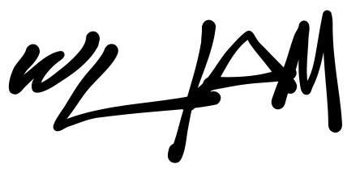

WILLIAM ALENCAR, filmmaker e editor, com experiência em TV e conteúdo para internet, registros profissionais de radialista (DRT: 0056592/SP) e repórter cinematográfico (MTb: 0095833/SP).
Entre 2008 e 2013, trabalhei na MTV BRASIL, como produtor dos programas 'MTV Na Rua' (2008-2009), 'Comédia MTV' (2011-2012), a premiação 'VMB - Video Music Brasil' (2008-2012), 'Especial Yo! MTV Raps' (2013), entre outros projetos.
De 2014 a 2016, colaborei na VICE MEDIA, captando e editando reportagens, performances musicais, conteúdo para marcas, além de ter dirigido a série 'Estamos Vivos', apresentada por DJ KL JAY, para quem produzo vídeos nas redes e canal no YouTube.
De 2017 a 2019, editei os programas da parceria entre GRUPO BANDEIRANTES e THE NEW YORK TIMES: 'Magazine', para o canal ARTE 1, e 'Conexão The New York Times',
exibido pelo BANDNEWS.
Também na Band, integrei a equipe de pós-produção do canal SABOR & ARTE, entre maio de 2021 e fevereiro de 2024.
Atualmente colaboro como filmmaker e editor na JÚPITER CONTEÚDO EM MOVIMENTO, produtora responsável pelas redes do dr. DRAUZIO VARELLA, entre outros conteúdos voltados à saúde e comportamento.